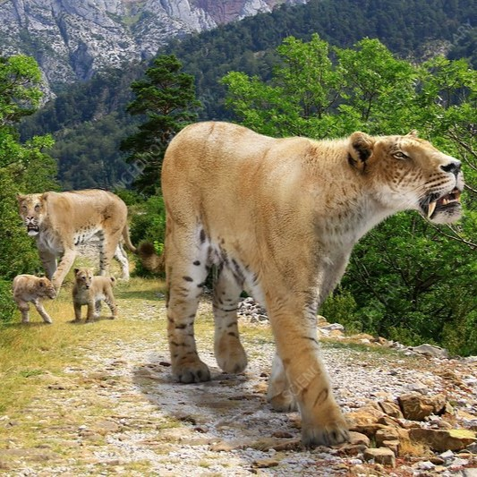

Saber-toothed cats are a group of extinct carnivorous mammals that were characterized by their long, curved canine teeth, which could be up to 7 inches in length. They lived during the Pleistocene epoch, from about 2.5 million to 10,000 years ago, and are known from fossils found on every continent except Australia and Antarctica.
There were many different species of saber-toothed cats, belonging to various families within the order Carnivora. Some of the most well-known genera include Smilodon, Homotherium, and Megantereon.
American lion
The American lion (Panthera leo atrox) is an extinct species of lion that lived in North America during the Pleistocene epoch, from about 340,000 to 11,000 years ago. It is one of the largest known species of lion, with some estimates suggesting that it could weigh up to 1,000 pounds.
The American lion was a top predator in its ecosystem and likely preyed on large herbivores such as mammoths, mastodons, and bison. It is believed that the lion may have hunted in packs, which would have allowed it to take down even larger prey.
Cave lion
The cave lion (Panthera spelaea) is an extinct species of lion that lived in Europe, Asia, and North America during the Pleistocene epoch, from about 370,000 to 10,000 years ago. It is also sometimes known as the European lion or the Eurasian cave lion.
The cave lion was a large predator, measuring up to 10 feet in length and weighing up to 880 pounds. It is thought to have been a skilled hunter, preying on large herbivores such as bison, horses, and reindeer. Like modern lions, the cave lion may have hunted in prides, allowing it to take down larger prey.
Smilodon populator
Smilodon populator, also known as the populator saber-toothed cat, is an extinct species of saber-toothed cat that lived in South America during the Pleistocene epoch, from about 2.5 million to 10,000 years ago. It was the largest species of saber-toothed cat, weighing up to 1,000 pounds and measuring up to 4 feet at the shoulder.
The Smilodon populator was an apex predator in its ecosystem, and likely preyed on large herbivores such as giant ground sloths, glyptodonts, and horses. It is believed that the saber-toothed cat used its long, sharp teeth to deliver a powerful bite to the neck or throat of its prey, allowing it to quickly kill even the largest animals.

Machairodus aphanistus
Machairodus aphanistus is an extinct species of saber-toothed cat that lived in North America during the Miocene epoch, about 12 million years ago. It was one of the earliest members of the Machairodontinae subfamily of cats, which includes all saber-toothed cats.
Machairodus aphanistus was a large predator, estimated to have weighed up to 660 pounds, with a skull measuring over 16 inches in length. It had long, flattened canines that could extend up to 8 inches beyond its lower jaw, which it likely used to deliver a powerful bite to the neck or throat of its prey.
Homotherium
Homotherium is an extinct genus of saber-toothed cat that lived in North America, Europe, Africa, and Asia during the Pleistocene epoch, from about 2.5 million to 10,000 years ago. It is also known as the scimitar-toothed cat because of its curved upper canines, which were shorter and more robust than those of other saber-toothed cats.
Homotherium was a large predator, estimated to have weighed up to 880 pounds and measured over 4 feet tall at the shoulder. Its short, muscular limbs suggest that it was a fast runner, and it likely hunted large herbivores such as bison, horses, and mammoths.